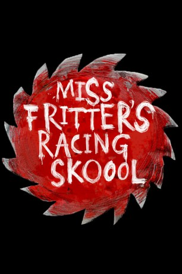

gesehen am 03.02.2019
gesehen am 03.02.2019Alternativ: Miss Fritter's Racing Skoool (Englischer Titel) gesehen am 03.02.2019
 
 IMDB-Wertung: 5.5 / 10
IMDB-Wertung: 5.5 / 10  Metascore:
Metascore: 
Enjoy blindsided testimonials from the Crazy 8's, touting the transformative impact Miss Fritter's Racing School has had in reshaping the direction of their lives.
Jahr: 2017
Dauer: 2 Minuten
FSK:
Land: USA Studio: Walt Disney Studios Home EntertainmentTonspuren:
Untertitel: Englisch,
Auflösung: 1080p (1920x1080) Größe: 290 MB
Genre: Komödie, Animation/Trick, Familie, Kurzfilm
Regisseur: James Ford Murphy
Drehbuch: James Ford Murphy
Soundtrack: Jake Monaco
Darsteller:
 Jeremy Maxwell als Arvy
Jeremy Maxwell als Arvy Jason Pace als Faregame
Jason Pace als Faregame Bob Peterson als Dr. Damage
Bob Peterson als Dr. DamageDatei: X:\Kinder Disney HD\Cars\Miss Fritters Rennsportschule (2017, FSK, 1920x1080).mkv seit 18.12.2018
Festplatte: Kinder-Filme+Trick
 Es gibt insgesamt 11 Filme in der Gruppe 'Kinder Disney HD\Cars'
Es gibt insgesamt 11 Filme in der Gruppe 'Kinder Disney HD\Cars'